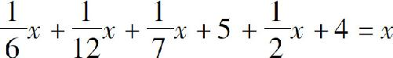

在前面我们介绍了什么是代数、代数的知识架构，以及代数思维和算术思维的差别．接下来，我们就讲述初中数学中的第一个难点：根据应用题列方程！列方程的过程，就是一个简单的翻译过程，把通过自然语言来描述的一个问题，变成一个用字母、数字和加减乘除描述的算式．我们说过，发现问题比解决问题更难，因此，这也是解题过程中最难的一步．当面对一个应用题的时候，我们应该怎样得到正确的算式呢？这个问题，是一个复杂的问题，根据题目难度的不同，我把所有的应用题分为四个等级：白描式应用题、隐含数字的应用题、隐含规律的应用题及实际工作生活中的问题．
今天我们要说的是最简单的一类题目，叫作白描式应用题．什么叫白描？白描就是用大白话把一切已知条件都告诉我们，我们直接机械地把文字翻译成数学符号就行．比如，三加几等于六？要列出这个问题的方程，简直不费吹灰之力，直接把几换成x 就行了，那就是3＋x ＝6．够简单的吧，那我们就再增加一点难度吧．
小明有5个苹果，他吃了一些，还剩下2个，请问：他吃了几个苹果？
这个问题也不难，小明有5个苹果就写5，他吃了一些，吃了以后苹果就少了，就用减法，吃了几个用x 表示，那就是5－x ，最后还剩下2个苹果，就是5－x ＝2．怎么样？一道题，从头到尾，是不是就像把文字转化成字母一样简单呢？那是不是这种方法只能解决一些简单的数学题呢？也不是，我们还可以继续增大难度．
小明有5个苹果，小明每天吃1个，妈妈有15个苹果，妈妈每天给小明2个苹果，问几天以后，小明和妈妈的苹果一样多？
这个问题看起来就困难一点了，但其实它也是一个白描式的问题：
小明有5个苹果，写下5．
每天吃1个苹果，那么x 天吃几个呢？x 个．
妈妈每天给小明2个苹果，x 天给多少个呢？2x 个．
小明一共有多少个苹果了？5－x ＋2x 个．
（然后我们再看妈妈这边）原来有15个，写下15．
每天给小明2个，x 天就是2x 个．
所以妈妈的苹果就剩下15－2x 个．
最后他们两个的苹果一样多，也就是5－x ＋2x ＝15－2x ．
我们的方程式就列出来了．注意，目前，我们只是发现问题、列出方程，并不对它求解．接下来让我们看一些更复杂的问题：
两个数之和是30，两数之差是10，请问：这两个数是多少？
因为要求两个数字了，所以要有x、y 两个变量．两数之和是30，列出算式x＋y ＝30；两数之差是10，再列出另一个算式：x－y ＝10．
这两个方程相互独立，所以可以组成一个方程组．
我们前文说过，由于这两个变量不存在乘除关系，所以这是个二元一次方程组．一般来说，对于一次方程，问题中有几个变量，就需要几个相互独立的等式才能求解，这里我们有两个变量，有两个等式，所以就可以求解了．按这个思路继续学习：
小明的苹果要分给一些同学，如果每人分6个就缺少3个，如果每人分5个就会剩余4个，问小明有几个同学，几个苹果？
这个题目仍然有两个变量：我们假设他有x 个同学，y 个苹果．每人分6个，x 个同学就是6x 个；缺少3个就是实际的苹果数比6x 少3个，也就是6x －3＝y ．根据第二问，每人5个多4个，可以列出方程：5x ＋4＝y ．最后我们仍然得到了一个二元一次方程组．
再来一个题目：
小明今年5岁，爸爸30岁，爷爷60岁，请问再经过几年，小明和爸爸的岁数加起来就和爷爷一样大？
让我们假设经过了x 年，那么：小明的岁数是5＋x ，爸爸的岁数是30＋x ，爷爷的岁数是60＋x ，小明和爸爸的岁数加起来和爷爷一样，也就是5＋x ＋30＋x ＝60＋x ．
怎么样？这样白描式的问题不是很难吧．最后我们看看代数的“祖师爷”给我们留下的问题．目前代数的发明人有多个，其中一个是古希腊的数学家丢番图，在他的墓碑上，通过一道代数题描述了自己的年龄，碑文是：
这里埋葬的是丢番图的尸骨，下面的文字描述了他的年龄：幸福的童年占据了他生命的六分之一，又过了人生的十二分之一，他步入了青年，婚后，他幸福地度过了生命的七分之一，再过了五年，他的第一个孩子出生了，就这样又度过了人生的二分之一，厄运降临，他的儿子去世了，四年以后，由于悲伤过度，他也撒手人寰．
虽然这段文字描述很长，但不难发现，这也是一个白描式的问题，我们只要假设他的年龄是x ，就得到了代数方程：

从这个题目中不难发现，白描式的应用题，无论题目本身是什么含义，不论题目的表述多么复杂，我们只需要从头到尾地把每句话的含义都转变为数学符号写下来，就很容易得到最终的方程．的确，人类发明代数的目的就是为了用纯数学的语言去描述复杂的世界．牛顿说，当面对一个抽象的问题时，要想解答它，首先要把它从普通语言转化为代数语言．白描式的应用题是代数应用题中最简单的一种，但是也应该多加练习，因为它可以帮助我们尽快熟悉代数的思维方式，摆脱小学算术思维的束缚．
还有一些应用题，有些条件是隐含在题目中的，需要我们把它们挖掘出来，才能凑出我们需要的方程式，这是一些什么题目呢？